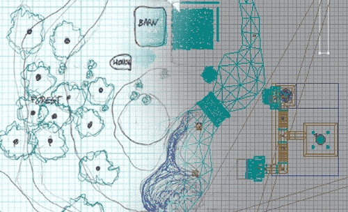

UDN
Search public documentation:
RuntimeMapPreproductionJP
English Translation
Interested in the Unreal Engine?
Visit the Unreal Technology site.
Looking for jobs and company info?
Check out the Epic games site.
Questions about support via UDN?
Contact the UDN Staff
Interested in the Unreal Engine?
Visit the Unreal Technology site.
Looking for jobs and company info?
Check out the Epic games site.
Questions about support via UDN?
Contact the UDN Staff
ランタイム マップ プロセス

はじめに
ゲーム、シミュレーション、インタラクティブのアート作品など、マップの用途がいかなるものであっても、しっかりと構築して今後問題が起きないようにする必要があります｡ここでは、EM_RunTimeマップを参照してマップを作成する前に必要なステップについて説明します｡ランタイムのビルドとマップをダウンロードするには、次のリンクをクリックしてください： http://udn.epicgames.com/pub/Powered/UnrealEngine2Runtime/オーディエンスの把握
オーディエンスが誰であるかにより、マップのデザインは大きく変わります｡一般的なゲームとしてマップを作成するなら、レベルはフラッシュや活気に満ち、複雑なデザインのものにする一方で、命を再生させる宙を浮くコインなど、ランダムなエレメントが欲しいかもしれません｡反対にオーディエンスがアーキテクトである場合、レベルはより現実的にし、すべてが実際にはどのように組み合わさるかに焦点を絞る必要があります｡ EM_RunTimeマップは、Unreal Engineに限らずゲーム エンジンをはじめて使う人をオーディエンスとして想定しています｡また、異なる非現実のエレメントがどのように動くかをシミュレートしたいオーディエンスにも便利です｡一般的なゲーマーは厳密な意味では想定されていませんが、レベルで起こる効果がどのように作成されているかを見るのに良いかもしれません｡ゴールの設定
オーディエンスを把握し、レベルの大まかな方向が決まったら、ゴールを複数で設定します｡ゴールを明確にしておくと、レベルをデザインする際に先々まで役に立ちます｡EM_RunTimeマップのゴールは以下のとおりです：- Unreal Engineで何が可能かを明示する
- 派手すぎない、美しいシーンを作成する
- 全体のダウンロード サイズを比較的小さくする（５MB程度）
- すべての要素を少しずつ包括
紙上でのレイアウト
デザインの作業を始めます｡プランをレイアウトせず直接エディタで作業を始めると、往々にして時間を食うことになります｡数分かけて大まかにすべてを書き出し、スケールを考慮してスケッチしてみましょう。２ブロックの倍数で分割されたグラフ紙を使うと、レベルを拡大する寸法が分かり便利です｡下は、EM_RunTimeマップのための初めのスケッチです｡必要なアート資産の決定
 スケッチをすると、必要なアート資産を決定するのが容易になります｡描いたマップを元に必要な資産をリストすれば、レベル デザイナーとアーティストが共に作業を開始できます｡以下はEM_RunTimeマップを開始する際に必要なアート資産のリストです：
スケッチをすると、必要なアート資産を決定するのが容易になります｡描いたマップを元に必要な資産をリストすれば、レベル デザイナーとアーティストが共に作業を開始できます｡以下はEM_RunTimeマップを開始する際に必要なアート資産のリストです： - 木
- 農場の建物
- 石壁
- 麦畑
- 茂み
- 火と松明
- 滝
- テレイン テクスチャ
- 湖と水テクスチャ
- 地下のBSP空間のためのエントランス メッシュ
- BSPエリアのためのアーチ
- ゲート ムーバ－
- ライト ウェルおよびライト ビーム
- http://www.google.com イメージの検索を使用
- http://corbis.com/ すべてのビジュアル アーティストのスタンダード
- http://ebay.com/ あらゆる角度からのショットが充実